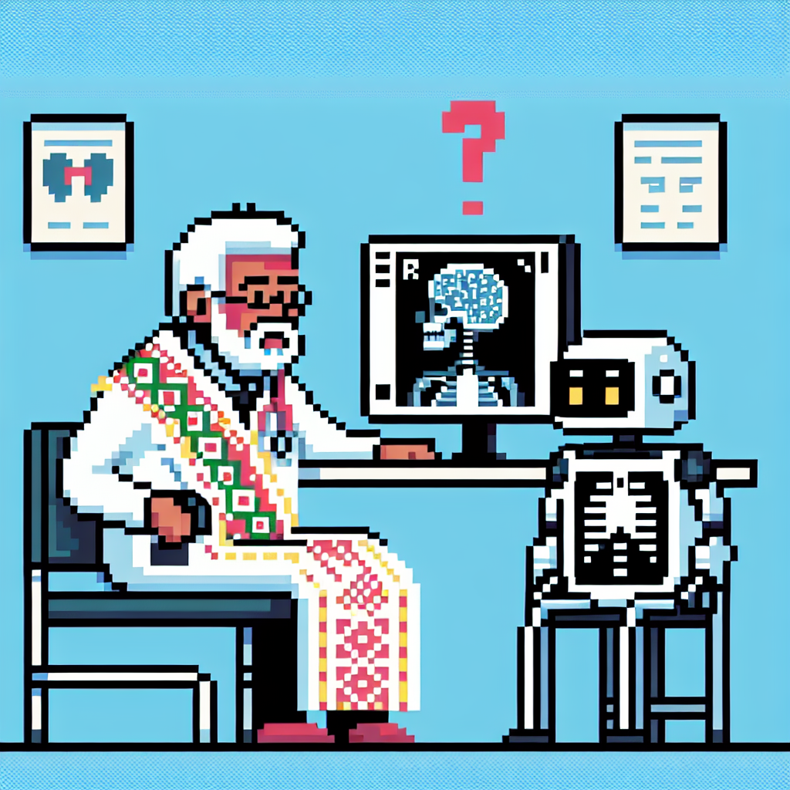

Why AI will never replace the radiologist
In his recent blog post dated January 31, 2023, titled "Why AI will never replace the radiologist," Python instructor Jose delves into the intricate world of machine learning and its application in radiology. With tags such as tech, machine-learning, and radiology, Jose outlines his perspective on the limitations of artificial intelligence in this specialized field.
In his insightful post, Jose discusses the potential drawbacks of relying solely on machine learning algorithms in radiology practice. While AI has shown remarkable capabilities in image interpretation and analysis, Jose argues that there are inherent complexities and nuances in radiology that cannot be fully replicated by artificial intelligence.
Through his engaging writing style, Jose articulates why he firmly believes that AI will never completely replace the invaluable role of a radiologist. By emphasizing the importance of human expertise, intuition, and clinical judgment in interpreting medical images, Jose provides a thought-provoking take on the intersection of technology and healthcare.
For those interested in the evolving landscape of machine learning in healthcare, Jose's blog post serves as a compelling read, offering a refreshing perspective on the role of AI in radiology. Stay tuned for more thought-provoking insights and discussions from this knowledgeable Python instructor.